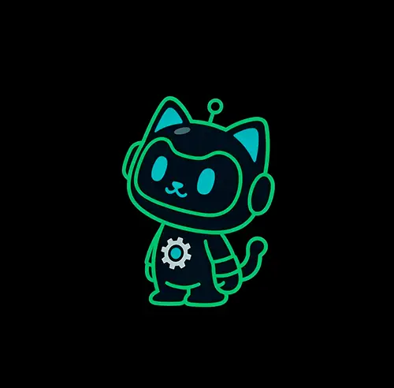

Über mich
Javier Carranza ist ein Softwareingenieur, der bewusst abseits des Lärms und der Eile arbeitet, die die heutige Technologiewelt dominieren. Mit mehr als 14 Jahren Erfahrung in internationalen Projekten ist er durch unzählige Codes gereist, an Bord verschiedener Raumschiffe, jedes mit seiner eigenen Besatzung und seinen eigenen Regeln – aber immer in dieselbe Richtung navigierend.
Er glaubt an Einfachheit, Qualität und langfristiges Denken, selbst wenn der Kontext zu schnellen und oberflächlichen Lösungen drängt.
Kürzlich hat er seine Fähigkeiten in der Cloud-Architektur weiter ausgebaut und sich zuletzt in das Gebiet der Künstlichen Intelligenz vertieft.
Er hat die Entstehung einer neuen technologischen Ära miterlebt und gestaltet diesen Transformationsprozess aktiv mit.
Er lebt in Bern, Schweiz, und ist offen für neue Herausforderungen, um dich bei der Optimierung deiner Arbeit zu unterstützen.
Über KettenKI
KettenKI entstand mit der Idee, eine robuste und moderne Kette zwischen Menschen und künstlicher Intelligenz zu schaffen, geleitet von ethischen und verantwortungsvollen Werten.
Wir kümmern uns um die Sicherheit und die Einhaltung gesetzlicher Vorschriften dieser Technologien, da sie Schwachstellen aufweisen können, die ausgenutzt werden könnten, wenn sie nicht richtig verwaltet werden.
KettenKI entwickelt sich kontinuierlich weiter, wächst von Tag zu Tag und erweitert ihr solides Wissensfundament. Dieses Wissen unterstützt Menschen dabei, ihre Aufgaben effizienter und flexibler zu erledigen.

Es geht nicht darum, Menschen zu ersetzen, sondern ihnen effektive und verlässliche Unterstützung zu bieten.
Möchtest du meinen Werdegang als Ingenieur sehen? Zum Portfolio →